Preface
This document describes the Wayland architecture and Wayland model of operation. This document is aimed primarily at Wayland developers and those looking to program with it; it does not cover application development.
There have been many contributors to this document and since this is only the first edition many errors are expected to be found. We appreciate corrections.
Yours, the Wayland open-source community November 2012
Protocol Documentation
This document does not describe the semantics of individual messages sent between compositors and clients. Consult the following documents to learn about concrete Wayland interfaces, requests, and events.
- wayland.xml - The official documentation of the core protocol.
- wayland-protocols - Standardized Wayland extension protocols.
- wayland.app - A community-maintained website that renders these protocols, and many more, as easily accessible HTML pages.
About the Book
This book is written in markdown and converted to HTML using mdbook.
It supports the CommonMark dialect of markdown plus a number of widely supported extensions:
~~strikethrough~~-
footnotes[^note] [^note]: text -
| Tables | Header2 | |--------|---------| | abc | def | -
- [x] Task lists - [ ] Incomplete task -
definition lists : This is the definition of a definition list -
> [!NOTE] > Admonitions
The full list of extensions is documented here.
Copyright
Copyright © 2012 Kristian Høgsberg
Permission is hereby granted, free of charge, to any person obtaining a copy of this software and associated documentation files (the “Software”), to deal in the Software without restriction, including without limitation the rights to use, copy, modify, merge, publish, distribute, sublicense, and/or sell copies of the Software, and to permit persons to whom the Software is furnished to do so, subject to the following conditions:
The above copyright notice and this permission notice (including the next paragraph) shall be included in all copies or substantial portions of the Software.
THE SOFTWARE IS PROVIDED “AS IS”, WITHOUT WARRANTY OF ANY KIND, EXPRESS OR IMPLIED, INCLUDING BUT NOT LIMITED TO THE WARRANTIES OF MERCHANTABILITY, FITNESS FOR A PARTICULAR PURPOSE AND NONINFRINGEMENT. IN NO EVENT SHALL THE AUTHORS OR COPYRIGHT HOLDERS BE LIABLE FOR ANY CLAIM, DAMAGES OR OTHER LIABILITY, WHETHER IN AN ACTION OF CONTRACT, TORT OR OTHERWISE, ARISING FROM, OUT OF OR IN CONNECTION WITH THE SOFTWARE OR THE USE OR OTHER DEALINGS IN THE SOFTWARE.
Introduction
Motivation
Most Linux and Unix-based systems rely on the X Window System (or simply X) as the low-level protocol for building bitmap graphics interfaces. On these systems, the X stack has grown to encompass functionality arguably belonging in client libraries, helper libraries, or the host operating system kernel. Support for things like PCI resource management, display configuration management, direct rendering, and memory management has been integrated into the X stack, imposing limitations like limited support for standalone applications, duplication in other projects (e.g. the Linux fb layer or the DirectFB project), and high levels of complexity for systems combining multiple elements (for example radeon memory map handling between the fb driver and X driver, or VT switching).
Moreover, X has grown to incorporate modern features like offscreen rendering and scene composition, but subject to the limitations of the X architecture. For example, the X implementation of composition adds additional context switches and makes things like input redirection difficult.

The diagram above illustrates the central role of the X server and compositor in operations, and the steps required to get contents on to the screen.
Over time, X developers came to understand the shortcomings of this approach and worked to split things up. Over the past several years, a lot of functionality has moved out of the X server and into client-side libraries or kernel drivers. One of the first components to move out was font rendering, with freetype and fontconfig providing an alternative to the core X fonts. Direct rendering OpenGL as a graphics driver in a client side library went through some iterations, ending up as DRI2, which abstracted most of the direct rendering buffer management from client code. Then cairo came along and provided a modern 2D rendering library independent of X, and compositing managers took over control of the rendering of the desktop as toolkits like GTK+ and Qt moved away from using X APIs for rendering. Recently, memory and display management have moved to the Linux kernel, further reducing the scope of X and its driver stack. The end result is a highly modular graphics stack.
The compositing manager as the display server
Wayland is a new display server and compositing protocol, and Weston is the implementation of this protocol which builds on top of all the components above. We are trying to distill out the functionality in the X server that is still used by the modern Linux desktop. This turns out to be not a whole lot. Applications can allocate their own off-screen buffers and render their window contents directly, using hardware accelerated libraries like libGL, or high quality software implementations like those found in Cairo. In the end, what’s needed is a way to present the resulting window surface for display, and a way to receive and arbitrate input among multiple clients. This is what Wayland provides, by piecing together the components already in the eco-system in a slightly different way.
X will always be relevant, in the same way Fortran compilers and VRML browsers are, but it’s time that we think about moving it out of the critical path and provide it as an optional component for legacy applications.
Overall, the philosophy of Wayland is to provide clients with a way to manage windows and how their contents are displayed. Rendering is left to clients, and system wide memory management interfaces are used to pass buffer handles between clients and the compositing manager.

The figure above illustrates how Wayland clients interact with a Wayland server. Note that window management and composition are handled entirely in the server, significantly reducing complexity while marginally improving performance through reduced context switching. The resulting system is easier to build and extend than a similar X system, because often changes need only be made in one place. Or in the case of protocol extensions, two (rather than 3 or 4 in the X case where window management and/or composition handling may also need to be updated).
Types of Compositors
Compositors come in different types, depending on which role they play in the overall architecture of the OS. For instance, a system compositor can be used for booting the system, handling multiple user switching, a possible console terminal emulator and so forth. A different compositor, a session compositor would provide the actual desktop environment. There are many ways for different types of compositors to co-exist.
In this section, we introduce three types of Wayland compositors relying on libwayland-server.
System Compositor
A system compositor can run from early boot until shutdown. It effectively replaces the kernel vt system, and can tie in with the systems graphical boot setup and multiseat support.
A system compositor can host different types of session compositors, and let us switch between multiple sessions (fast user switching, or secure/personal desktop switching).
A linux implementation of a system compositor will typically use libudev, egl, kms, evdev and cairo.
For fullscreen clients, the system compositor can reprogram the video scanout address to read directly from the client provided buffer.
Session Compositor
A session compositor is responsible for a single user session. If a system compositor is present, the session compositor will run nested under the system compositor. Nesting is feasible because the protocol is asynchronous; roundtrips would be too expensive when nesting is involved. If no system compositor is present, a session compositor can run directly on the hardware.
X applications can continue working under a session compositor by means of a root-less X server that is activated on demand.
Possible examples for session compositors include
-
gnome-shell
-
moblin
-
kwin
-
kmscon
-
rdp session
-
Weston with X11 or Wayland backend is a session compositor nested in another session compositor.
-
fullscreen X session under Wayland
Embedding Compositor
X11 lets clients embed windows from other clients, or lets clients copy pixmap contents rendered by another client into their window. This is often used for applets in a panel, browser plugins and similar. Wayland doesn’t directly allow this, but clients can communicate GEM buffer names out-of-band, for example, using D-Bus, or command line arguments when the panel launches the applet. Another option is to use a nested Wayland instance. For this, the Wayland server will have to be a library that the host application links to. The host application will then pass the Wayland server socket name to the embedded application, and will need to implement the Wayland compositor interface. The host application composites the client surfaces as part of it’s window, that is, in the web page or in the panel. The benefit of nesting the Wayland server is that it provides the requests the embedded client needs to inform the host about buffer updates and a mechanism for forwarding input events from the host application.
An example for this kind of setup is firefox embedding the flash player as a kind of special-purpose compositor.
Wayland Architecture
X vs. Wayland Architecture
A good way to understand the Wayland architecture and how it is different from X is to follow an event from the input device to the point where the change it affects appears on screen.
This is where we are now with X:
X architecture diagram
-
The kernel gets an event from an input device and sends it to X through the evdev input driver. The kernel does all the hard work here by driving the device and translating the different device specific event protocols to the linux evdev input event standard.
-
The X server determines which window the event affects and sends it to the clients that have selected for the event in question on that window. The X server doesn’t actually know how to do this right, since the window location on screen is controlled by the compositor and may be transformed in a number of ways that the X server doesn’t understand (scaled down, rotated, wobbling, etc).
-
The client looks at the event and decides what to do. Often the UI will have to change in response to the event - perhaps a check box was clicked or the pointer entered a button that must be highlighted. Thus the client sends a rendering request back to the X server.
-
When the X server receives the rendering request, it sends it to the driver to let it program the hardware to do the rendering. The X server also calculates the bounding region of the rendering, and sends that to the compositor as a damage event.
-
The damage event tells the compositor that something changed in the window and that it has to recomposite the part of the screen where that window is visible. The compositor is responsible for rendering the entire screen contents based on its scenegraph and the contents of the X windows. Yet, it has to go through the X server to render this.
-
The X server receives the rendering requests from the compositor and either copies the compositor back buffer to the front buffer or does a pageflip. In the general case, the X server has to do this step so it can account for overlapping windows, which may require clipping and determine whether or not it can page flip. However, for a compositor, which is always fullscreen, this is another unnecessary context switch.
As suggested above, there are a few problems with this approach. The X server doesn’t have the information to decide which window should receive the event, nor can it transform the screen coordinates to window-local coordinates. And even though X has handed responsibility for the final painting of the screen to the compositing manager, X still controls the front buffer and modesetting. Most of the complexity that the X server used to handle is now available in the kernel or self contained libraries (KMS, evdev, mesa, fontconfig, freetype, cairo, Qt etc). In general, the X server is now just a middle man that introduces an extra step between applications and the compositor and an extra step between the compositor and the hardware.
In Wayland the compositor is the display server. We transfer the control of KMS and evdev to the compositor. The Wayland protocol lets the compositor send the input events directly to the clients and lets the client send the damage event directly to the compositor:
Wayland architecture diagram
-
The kernel gets an event and sends it to the compositor. This is similar to the X case, which is great, since we get to reuse all the input drivers in the kernel.
-
The compositor looks through its scenegraph to determine which window should receive the event. The scenegraph corresponds to what’s on screen and the compositor understands the transformations that it may have applied to the elements in the scenegraph. Thus, the compositor can pick the right window and transform the screen coordinates to window-local coordinates, by applying the inverse transformations. The types of transformation that can be applied to a window is only restricted to what the compositor can do, as long as it can compute the inverse transformation for the input events.
-
As in the X case, when the client receives the event, it updates the UI in response. But in the Wayland case, the rendering happens in the client, and the client just sends a request to the compositor to indicate the region that was updated.
-
The compositor collects damage requests from its clients and then recomposites the screen. The compositor can then directly issue an ioctl to schedule a pageflip with KMS.
Wayland Rendering
One of the details I left out in the above overview is how clients actually render under Wayland. By removing the X server from the picture we also removed the mechanism by which X clients typically render. But there’s another mechanism that we’re already using with DRI2 under X: direct rendering. With direct rendering, the client and the server share a video memory buffer. The client links to a rendering library such as OpenGL that knows how to program the hardware and renders directly into the buffer. The compositor in turn can take the buffer and use it as a texture when it composites the desktop. After the initial setup, the client only needs to tell the compositor which buffer to use and when and where it has rendered new content into it.
This leaves an application with two ways to update its window contents:
-
Render the new content into a new buffer and tell the compositor to use that instead of the old buffer. The application can allocate a new buffer every time it needs to update the window contents or it can keep two (or more) buffers around and cycle between them. The buffer management is entirely under application control.
-
Render the new content into the buffer that it previously told the compositor to to use. While it’s possible to just render directly into the buffer shared with the compositor, this might race with the compositor. What can happen is that repainting the window contents could be interrupted by the compositor repainting the desktop. If the application gets interrupted just after clearing the window but before rendering the contents, the compositor will texture from a blank buffer. The result is that the application window will flicker between a blank window or half-rendered content. The traditional way to avoid this is to render the new content into a back buffer and then copy from there into the compositor surface. The back buffer can be allocated on the fly and just big enough to hold the new content, or the application can keep a buffer around. Again, this is under application control.
In either case, the application must tell the compositor which area of the surface holds new contents. When the application renders directly to the shared buffer, the compositor needs to be noticed that there is new content. But also when exchanging buffers, the compositor doesn’t assume anything changed, and needs a request from the application before it will repaint the desktop. The idea that even if an application passes a new buffer to the compositor, only a small part of the buffer may be different, like a blinking cursor or a spinner.
Accelerated GPU Buffer Exchange
Clients exchange GPU buffers with the compositor as dma-buf file descriptors, which are universal handles that are independent of any particular rendering API or memory allocator. The linux-dmabuf-v1 protocol is used to turn one or more dma-buf FDs into a wl_buffer.
If the client uses the Vulkan or EGL (via wayland-egl) window-system integration (WSI), this is done transparently by the WSI.
Clients can alternatively allocate and import dma-bufs themselves using the GBM library, Vulkan, udmabuf, or dma-buf heaps.
-
Using GBM, the client can allocate a gbm_bo and export one or more dma-buf FDs from it.
-
Using Vulkan, the client can create a VkDeviceMemory object and use VK_EXT_external_memory_dma_buf and VK_EXT_image_drm_format_modifier to export a dma-buf FD from it.
-
udmabuf can be used to create dma-buf FDs from linear host memory.
-
Dma-buf heaps can be used by privileged applications to create dma-buf FDs on embedded devices.
Compositors use VK_EXT_external_memory_dma_buf and VK_EXT_image_drm_format_modifier or EGL_EXT_image_dma_buf_import and EGL_EXT_image_dma_buf_import_modifiers to import the dma-bufs provided by the client into their own Vulkan or EGL renderers.
Clients do not need to wait for the GPU to finish rendering before submitting dma-bufs to the compositor. Clients can use the linux-drm-syncobj-v1 protocol to exchange DRM synchronization objects with the compositor. These objects are used to asynchronously signal ownership transfer of buffers from clients to the compositor and vice versa. The WSIs do this transparently.
If the linux-drm-syncobj-v1 protocol is not supported by the compositor, clients and compositors can use the DMA_BUF_IOCTL_EXPORT_SYNC_FILE and DMA_BUF_IOCTL_IMPORT_SYNC_FILE ioctls to access and create implicit synchronization barriers.
Display Programming
Compositors enumerate DRM KMS devices using udev. Udev also notifies compositors of KMS device and display hotplug events.
Access to DRM KMS device ioctls is privileged. Since compositors usually run as unprivileged applications, they typically gain access to a privileged file descriptor using the TakeDevice method provided by logind.
Using the file descriptor, compositors use KMS ioctls to enumerate the available displays.
Compositors use atomic mode setting to change the buffer shown by the display, to change the display’s resolution, to enable or disable HDR, and so on.
Wayland Protocol and Model of Operation
Basic Principles
The Wayland protocol is an asynchronous object oriented protocol. All requests are method invocations on some object. The requests include an object ID that uniquely identifies an object on the server. Each object implements an interface and the requests include an opcode that identifies which method in the interface to invoke.
The protocol is message-based. A message sent by a client to the server is called request. A message from the server to a client is called event. A message has a number of arguments, each of which has a certain type (see Wire Format for a list of argument types).
Additionally, the protocol can specify enums which associate names to specific
numeric enumeration values. These are primarily just descriptive in nature: at
the wire format level enums are just integers. But they also serve a secondary
purpose to enhance type safety or otherwise add context for use in language
bindings or other such code. This latter usage is only supported so long as code
written before these attributes were introduced still works after; in other
words, adding an enum should not break API, otherwise it puts backwards
compatibility at risk.
enums can be defined as just a set of integers, or as bitfields. This is
specified via the bitfield boolean attribute in the enum definition. If this
attribute is true, the enum is intended to be accessed primarily using bitwise
operations, for example when arbitrarily many choices of the enum can be ORed
together; if it is false, or the attribute is omitted, then the enum arguments
are a just a sequence of numerical values.
The enum attribute can be used on either uint or int arguments, however if
the enum is defined as a bitfield, it can only be used on uint args.
The server sends back events to the client, each event is emitted from an object. Events can be error conditions. The event includes the object ID and the event opcode, from which the client can determine the type of event. Events are generated both in response to requests (in which case the request and the event constitutes a round trip) or spontaneously when the server state changes.
-
State is broadcast on connect, events are sent out when state changes. Clients must listen for these changes and cache the state. There is no need (or mechanism) to query server state.
-
The server will broadcast the presence of a number of global objects, which in turn will broadcast their current state.
Code Generation
The interfaces, requests and events are defined in protocol/wayland.xml. This xml is used to generate the function prototypes that can be used by clients and compositors.
The protocol entry points are generated as inline functions which just wrap the
wl_proxy_* functions. The inline functions aren’t part of the library ABI and
language bindings should generate their own stubs for the protocol entry points
from the xml.
Wire Format
The protocol is sent over a UNIX domain stream socket, where the endpoint
usually is named wayland-0 (although it can be changed via WAYLAND_DISPLAY
in the environment). Beginning in Wayland 1.15, implementations can optionally
support server socket endpoints located at arbitrary locations in the filesystem
by setting WAYLAND_DISPLAY to the absolute path at which the server endpoint
listens. The socket may also be provided through file descriptor inheritance, in
which case WAYLAND_SOCKET is set.
Every message is structured as 32-bit words; values are represented in the host’s byte-order. The message header has 2 words in it:
-
The first word is the sender’s object ID (32-bit).
-
The second has 2 parts of 16-bit. The upper 16-bits are the message size in bytes, starting at the header (i.e. it has a minimum value of 8).The lower is the request/event opcode.
The payload describes the request/event arguments. Every argument is always aligned to 32-bits. Where padding is required, the value of padding bytes is undefined. There is no prefix that describes the type, but it is inferred implicitly from the xml specification.
The representation of argument types are as follows:
- int uint
- The value is the 32-bit value of the signed/unsigned int.
- fixed
- Signed 24.8 decimal numbers. It is a signed decimal type which offers a sign bit, 23 bits of integer precision and 8 bits of decimal precision. This is exposed as an opaque struct with conversion helpers to and from double and int on the C API side.
- string
- Starts with an unsigned 32-bit length (including null terminator), followed by the UTF-8 encoded string contents, including terminating null byte, then padding to a 32-bit boundary. A null value is represented with a length of 0. Interior null bytes are not permitted.
- object
- 32-bit object ID. A null value is represented with an ID of 0.
- new_id
- The 32-bit object ID. Generally, the interface used for the new object is
inferred from the xml, but in the case where it’s not specified, a new_id is
preceded by a
stringspecifying the interface name, and auintspecifying the version. - array
- Starts with 32-bit array size in bytes, followed by the array contents verbatim, and finally padding to a 32-bit boundary.
- fd
- The file descriptor is not stored in the message buffer, but in the ancillary data of the UNIX domain socket message (msg_control).
The protocol does not specify the exact position of the ancillary data in the
stream, except that the order of file descriptors is the same as the order of
messages and fd arguments within messages on the wire.
In particular, it means that any byte of the stream, even the message header, may carry the ancillary data with file descriptors.
Clients and compositors should queue incoming data until they have whole messages to process, as file descriptors may arrive earlier or later than the corresponding data bytes.
Versioning
Every interface is versioned and every protocol object implements a particular version of its interface. For global objects, the maximum version supported by the server is advertised with the global and the actual version of the created protocol object is determined by the version argument passed to wl_registry.bind(). For objects that are not globals, their version is inferred from the object that created them.
In order to keep things sane, this has a few implications for interface versions:
-
The object creation hierarchy must be a tree. Otherwise, inferring object versions from the parent object becomes a much more difficult to properly track.
-
When the version of an interface increases, so does the version of its parent (recursively until you get to a global interface)
-
A global interface’s version number acts like a counter for all of its child interfaces. Whenever a child interface gets modified, the global parent’s interface version number also increases (see above). The child interface then takes on the same version number as the new version of its parent global interface.
To illustrate the above, consider the wl_compositor interface. It has two children, wl_surface and wl_region. As of wayland version 1.2, wl_surface and wl_compositor are both at version 3. If something is added to the wl_region interface, both wl_region and wl_compositor will get bumpped to version 4. If, afterwards, wl_surface is changed, both wl_compositor and wl_surface will be at version 5. In this way the global interface version is used as a sort of “counter” for all of its child interfaces. This makes it very simple to know the version of the child given the version of its parent. The child is at the highest possible interface version that is less than or equal to its parent’s version.
It is worth noting a particular exception to the above versioning scheme. The wl_display (and, by extension, wl_registry) interface cannot change because it is the core protocol object and its version is never advertised nor is there a mechanism to request a different version.
Connect Time
There is no fixed connection setup information, the server emits multiple events at connect time, to indicate the presence and properties of global objects: outputs, compositor, input devices.
Security and Authentication
-
mostly about access to underlying buffers, need new drm auth mechanism (the grant-to ioctl idea), need to check the cmd stream?
-
getting the server socket depends on the compositor type, could be a system wide name, through fd passing on the session dbus. or the client is forked by the compositor and the fd is already opened.
Creating Objects
Each object has a unique ID. The IDs are allocated by the entity creating the object (either client or server). IDs allocated by the client are in the range [1, 0xfeffffff] while IDs allocated by the server are in the range [0xff000000, 0xffffffff]. The 0 ID is reserved to represent a null or non-existent object. For efficiency purposes, the IDs are densely packed in the sense that the ID N will not be used until N-1 has been used. This ordering is not merely a guideline, but a strict requirement, and there are implementations of the protocol that rigorously enforce this rule, including the ubiquitous libwayland.
Compositor
The compositor is a global object, advertised at connect time.
See wl_compositor for the protocol description.
Surfaces
A surface manages a rectangular grid of pixels that clients create for displaying their content to the screen. Clients don’t know the global position of their surfaces, and cannot access other clients’ surfaces.
Once the client has finished writing pixels, it ‘commits’ the buffer; this permits the compositor to access the buffer and read the pixels. When the compositor is finished, it releases the buffer back to the client.
See wl_surface for the protocol description.
Input
A seat represents a group of input devices including mice, keyboards and touchscreens. It has a keyboard and pointer focus. Seats are global objects. Pointer events are delivered in surface-local coordinates.
The compositor maintains an implicit grab when a button is pressed, to ensure that the corresponding button release event gets delivered to the same surface. But there is no way for clients to take an explicit grab. Instead, surfaces can be mapped as ‘popup’, which combines transient window semantics with a pointer grab.
To avoid race conditions, input events that are likely to trigger further requests (such as button presses, key events, pointer motions) carry serial numbers, and requests such as wl_surface.set_popup require that the serial number of the triggering event is specified. The server maintains a monotonically increasing counter for these serial numbers.
Input events also carry timestamps with millisecond granularity. Their base is undefined, so they can’t be compared against system time (as obtained with clock_gettime or gettimeofday). They can be compared with each other though, and for instance be used to identify sequences of button presses as double or triple clicks.
See wl_seat for the protocol description.
Talk about:
-
keyboard map, change events
-
xkb on Wayland
-
multi pointer Wayland
A surface can change the pointer image when the surface is the pointer focus of the input device. Wayland doesn’t automatically change the pointer image when a pointer enters a surface, but expects the application to set the cursor it wants in response to the pointer focus and motion events. The rationale is that a client has to manage changing pointer images for UI elements within the surface in response to motion events anyway, so we’ll make that the only mechanism for setting or changing the pointer image. If the server receives a request to set the pointer image after the surface loses pointer focus, the request is ignored. To the client this will look like it successfully set the pointer image.
Setting the pointer image to NULL causes the cursor to be hidden.
The compositor will revert the pointer image back to a default image when no surface has the pointer focus for that device.
What if the pointer moves from one window which has set a special pointer image to a surface that doesn’t set an image in response to the motion event? The new surface will be stuck with the special pointer image. We can’t just revert the pointer image on leaving a surface, since if we immediately enter a surface that sets a different image, the image will flicker. If a client does not set a pointer image when the pointer enters a surface, the pointer stays with the image set by the last surface that changed it, possibly even hidden. Such a client is likely just broken.
Output
An output is a global object, advertised at connect time or as it comes and goes.
See wl_output for the protocol description.
-
laid out in a big (compositor) coordinate system
-
basically xrandr over Wayland
-
geometry needs position in compositor coordinate system
-
events to advertise available modes, requests to move and change modes
Data sharing between clients
The Wayland protocol provides clients a mechanism for sharing data that allows
the implementation of copy-paste and drag-and-drop. The client providing the
data creates a wl_data_source object and the clients obtaining the data will
see it as wl_data_offer object. This interface allows the clients to agree on
a mutually supported mime type and transfer the data via a file descriptor that
is passed through the protocol.
The next section explains the negotiation between data source and data offer
objects. Data devices explains how these objects are created
and passed to different clients using the wl_data_device interface that
implements copy-paste and drag-and-drop support.
See wl_data_offer, wl_data_source, wl_data_device and wl_data_device_manager for protocol descriptions.
MIME is defined in RFC’s 2045-2049. A registry of MIME types is maintained by the Internet Assigned Numbers Authority (IANA).
Data negotiation
A client providing data to other clients will create a wl_data_source object
and advertise the mime types for the formats it supports for that data through
the wl_data_source.offer request. On the receiving end, the data offer object
will generate one wl_data_offer.offer event for each supported mime type.
The actual data transfer happens when the receiving client sends a
wl_data_offer.receive request. This request takes a mime type and a file
descriptor as arguments. This request will generate a wl_data_source.send
event on the sending client with the same arguments, and the latter client is
expected to write its data to the given file descriptor using the chosen mime
type.
Data devices
Data devices glue data sources and offers together. A data device is associated
with a wl_seat and is obtained by the clients using the
wl_data_device_manager factory object, which is also responsible for creating
data sources.
Clients are informed of new data offers through the wl_data_device.data_offer
event. After this event is generated the data offer will advertise the available
mime types. New data offers are introduced prior to their use for copy-paste or
drag-and-drop.
Selection
Each data device has a selection data source. Clients create a data source
object using the device manager and may set it as the current selection for a
given data device. Whenever the current selection changes, the client with
keyboard focus receives a wl_data_device.selection event. This event is also
generated on a client immediately before it receives keyboard focus.
The data offer is introduced with wl_data_device.data_offer event before the
selection event.
Drag and Drop
A drag-and-drop operation is started using the wl_data_device.start_drag
request. This requests causes a pointer grab that will generate enter, motion
and leave events on the data device. A data source is supplied as argument to
start_drag, and data offers associated with it are supplied to clients surfaces
under the pointer in the wl_data_device.enter event. The data offer is
introduced to the client prior to the enter event with the
wl_data_device.data_offer event.
Clients are expected to provide feedback to the data sending client by calling
the wl_data_offer.accept request with a mime type it accepts. If none of the
advertised mime types is supported by the receiving client, it should supply
NULL to the accept request. The accept request causes the sending client to
receive a wl_data_source.target event with the chosen mime type.
When the drag ends, the receiving client receives a wl_data_device.drop event
at which it is expected to transfer the data using the wl_data_offer.receive
request.
Message Definition Language
Overview
The fundamentals of the Wayland protocol are explained in Wayland Protocol and Model of Operation. This chapter formally defines the language used to define Wayland protocols.
Wayland is an object-oriented protocol. Each object follows exactly one interface. An interface is a collection of message and enumeration definitions. A message can be either a request (sent by a client) or an event (sent by a server). A message can have arguments. All arguments are typed.
XML Elements
protocol
protocol ::= (copyright?, description? interface+)
protocol is the root element in a Wayland protocol XML file. Code generation
tools may optionally use the protocol name in API symbol names. The XML file
name should be similar to the protocol name.
The description element should be used to document the intended purpose of the protocol, give an overview, and give any development stage notices if applicable.
The copyright element should be used to indicate the copyrights and the license of the XML file.
Required attributes
name=“cname”-
The name of the protocol (a.k.a protocol extension). cname-requirements
The name should be globally unique. Protocols to be included in wayland-protocols must follow the naming rules set there. Other protocols should use a unique prefix for the name, e.g. referring to the owning project’s name.
copyright
Parent elements: protocol
copyright ::= #PCDATA
Contains free-form, pre-formatted text for copyright and license notices.
description
Parent elements: protocol, interface, request, event, arg, enum, entry
description ::= #PCDATA
Contains human-readable documentation for its parent element. May contain formatted text, including paragraphs and bulleted lists.
Optional attributes
summary=“summary”-
A short (half a line at most) description of the documented element.
When a description element is used, it is recommended to not use the
summaryattribute of the parent element.
interface
Parent elements: protocol
interface ::= (description?, (request|event|enum)+)
An interface element contains the requests and events that form the interface.
Enumerations can also be defined with enum elements. These all belong into the
namespace of the interface. Code generation tools may use the interface name
in API symbol names.
Interfaces form an ancestry tree. Aside from wl_display, new protocol objects are always created through an existing protocol object that may be referred to as the factory object. This can happen in one of two ways: the factory object’s interface either defines or does not define the new object’s interface.
When the factory interface defines the new object’s interface, the new object also inherits the factory object’s interface version number. This number defines the interface version of the new object. The factory object is referred to as the parent object and the factory interface is referred to as the parent interface. This forms the ancestry tree of interfaces.
When the factory interface does not define the new object’s interface, both the interface name and the version must be communicated explicitly. The foremost example of this is wl_registry.bind. In this case the terms “parent” or “ancestor” are not used. Interfaces that are advertised through wl_registry are called global interfaces, or globals for short.
If objects having the interface can cause protocol errors, the protocol error
codes must be defined within the interface with an enum element with its name
set to "error". Protocol error codes are always specific to the interface of
the object referred to in
wl_display.error.
The description element should be used to describe the purpose and the general usage of the interface.
Required attributes
name=“cname”-
The name of the interface. cname-requirements The name must be unique in the protocol, and preferably it should also be globally unique to avoid API conflicts in language bindings of multiple protocols.
Protocols to be included in wayland-protocols must follow the interface naming rules set there. Other protocols should use a unique prefix for the name, e.g. referring to the owning project’s name.
version=“V”-
The interface’s latest version number
Vmust be an integer greater than zero. An interface element defines all versions of the interface from 1 toVinclusive. The contents of each interface version are defined in each of the request, event, enum and entry elements using the attributessinceanddeprecated-since, and in the specification text.When an interface is extended, the version number must be incremented on all the interfaces part of the same interface ancestry tree. The exception to this rule are interfaces which are forever stuck to version 1, which is usually caused by having multiple parent interfaces with independent ancestor global interfaces.
A protocol object may have any defined version of the interface. The version of the object is determined at runtime either by inheritance from another protocol object or explicitly.
It is possible for a protocol object to have a version higher than defined by its interface. This may happen when the interface is stuck at version 1 as per above. It may also happen when a protocol XML file has not been thoroughly updated as required. In such cases the object shall function as with the highest defined interface version.
request
Parent elements: interface
request ::= (description?, arg*)
Defines a request, a message from a client to a server. Requests are always associated with a specific protocol object.
Requests are automatically assigned opcodes in the order they appear inside the interface element. Therefore the only backwards-compatible way to add requests to an interface is to add them to the end. Any event elements do not interfere with request opcode assignments.
The arg elements declare the request’s arguments. There can be 0 to 20 arguments for a request. The order of arg inside the request element defines the order of the arguments on the wire. All declared arguments are mandatory, and extra arguments are not allowed on the wire.
The description element should be used to document the request.
Required attributes
name=“cname”-
The name of the request. cname-requirements The name must be unique within all requests and events in the containing interface.
Code and language binding generators may use the name in the API they create. The
nameof the containing interface provides the namespace for requests.
Optional attributes
type=“destructor”-
When this attribute is present, the request is a destructor: it shall destroy the protocol object it is sent on. Protocol IPC libraries may use this for bookkeeping protocol object lifetimes.
Libwayland-client uses this information to ignore incoming events for destroyed protocol objects. Such events may occur due to a natural race condition between the client destroying a protocol object and the server sending events before processing the destroy request.
since=“S”-
Smust be an integer greater than zero. Ifsinceis not specified,since="1"is assumed.This request was added in interface
versionS. The request does not exist if the protocol object has a bound version smaller thanS. Attempts to use it in such a case shall raise the protocol errorwl_display.error.invalid_method. deprecated-since=“D”-
Dmust be an integer greater than the value ofsince. Ifdeprecated-sinceis not specified, then the request is not deprecated in any version of the containing interface.This request was deprecated in interface
versionDand above, and should not be sent on protocol objects of such version. This is informational. Compositors must still be prepared to handle the request unless specified otherwise.
event
Parent elements: interface
event ::= (description?, arg*)
Defines an event, a message from a server to a client. Events are always associated with a specific protocol object.
Events are automatically assigned opcodes in the order they appear inside the interface element. Therefore the only backwards-compatible way to add events to an interface is to add them to the end. Any request elements do not interfere with event opcode assignments.
The arg elements declare the event’s arguments. There can be 0 to 20 arguments for an event. The order of arg inside the event element defines the order of the arguments on the wire. All declared arguments are mandatory, and extra arguments are not allowed on the wire.
The description element should be used to document the event.
Required attributes
name=“cname”-
The name of the event. cname-requirements The name must be unique within all requests and events in the containing interface.
Code and language binding generators may use the name in the API they create. The
nameof the containing interface provides the namespace for events.
Optional attributes
type=“destructor”-
When this attribute is present, the event is a destructor: it shall destroy the protocol object it is sent on. Protocol IPC libraries may use this for bookkeeping protocol object lifetimes.
Warning
Destructor events are an underdeveloped feature in Wayland. They can be used only on client-created protocol objects, and it is the protocol designer’s responsibility to design such a message exchange that race conditions cannot occur. The main problem would be a client sending a request at the same time as the server is sending a destructor event. The server will consider the protocol object to be already invalid or even recycled when it proceeds to process the request. This often results in protocol errors, but under specific conditions it might also result in silently incorrect behavior.
Destructor events should not be used in new protocols. If a destructor event is necessary, the simplest way to avoid these problems is to have the interface not contain any requests.
since=“S”-
Smust be an integer greater than zero. Ifsinceis not specified,since="1"is assumed.This event was added in interface
versionS. The event does not exist if the protocol object has a bound version smaller thanS. deprecated-since=“D”-
Dmust be an integer greater than the value ofsince. Ifdeprecated-sinceis not specified, then the event is not deprecated in any version of the containing interface.This event was deprecated in interface
versionDand above, and should not be sent on protocol objects of such version. This is informational. Clients must still be prepared to receive this event unless otherwise specified.
arg
Parent elements: request, event
arg ::= description?
This element declares one argument for the request or the event.
Required attributes
name=“cname”-
The name of the argument. cname-requirements The name must be unique within all the arguments of the parent element.
type=“T”-
The type
Tof the argument datum must be one of:int-
32-bit signed integer.
uint-
32-bit unsigned integer.
fixed-
Signed 24.8-bit fixed-point value.
string-
UTF-8 encoded string value, NUL byte terminated. Interior NUL bytes are not allowed.
array-
A byte array of arbitrary data.
fd-
A file descriptor.
The file descriptor must be open and valid on send. It is not possible to pass a null value.
new_id-
Creates a new protocol object. A request or an event may have at most one
new_idargument.If
interfaceis specified, the new protocol object shall have the specified interface, and the new object’s (interface) version shall be the version of the object on which the request or event is being sent.If
interfaceis not specified, the request shall implicitly have two additional arguments: Astringfor an interface name, and auintfor the new object’s version. Leaving the interface unspecified is reserved for special use, wl_registry.bind for example.Note
An event argument must always specify the
new_idinterface. object-
Reference to an existing protocol object.
The attribute
interfaceshould be specified. Otherwise IPC libraries cannot enforce the interface, and checking the interface falls on user code and specification text.
Optional attributes
summary=“summary”-
A short (half a line at most) description. This attribute should not be used if a description is used.
interface=“iface”-
If given,
ifacemust be thenameof some interface, andtypeof this argument must be either"object"or"new_id". This indicates that the existing or new object must have the interfaceiface. Use for other argument types is forbidden.Note
If an interface from another protocol is used, then this creates a dependency between the protocols. If an application generates code for one protocol, then it must also generate code for all dependencies. Therefore this would not be a backwards compatible change.
allow-null=“true” | “false”-
Whether the argument value can be null on send. Defaults to
"false", meaning it is illegal to send a null value. Can be used only whentypeis"string"or"object".Note
Even though this attribute can be used to forbid a compositor from sending a null object as an event argument, an IPC library implementation may not protect the client from receiving a null object. This can happen with libwayland-client when the client has destroyed the protocol object before dispatching an event that referred to it in an argument.
-
If specified, indicates that the argument value should come from the enum named
enum-cname-suffix. If the enumeration is a bitfield, thentypemust be"uint". Otherwisetypemust be either"uint"or"int".The name
enum-cname-suffixrefers to an enum in the same interface by default. If it is necessary to refer to an enumeration from another interface, the interface name can be given with a period:`enum`="`iface`.`enum-cname-suffix`"Note
This attribute alone does not automatically restrict the legal values for this argument. If values from outside of the enumeration need to be forbidden, that must be specified explicitly in the documentation.
A common design pattern is to have the server advertise the supported enumeration or bit values with events and explicitly forbid clients from using any other values in requests. This also requires a protocol error code to be specified with the error enum to be raised if a client uses an illegal value, see interface.
enum
Parent elements: protocol
enum ::= (description?, entry*)
This tag defines an enumeration of integer values. Enumerations are merely a syntactic construct to give names to arbitrary integer constants. Each constant is listed as an entry with its name. There are two types of enumerations: regular enumerations and bitfields.
Regular enumerations do not use bitfield attribute, or they set it to
"false". The set of pre-defined values that belong to a regular enumeration is
exactly the set of values listed as entry elements after the protocol object
version is taken into account. See the entry attributes since and
deprecated-since.
Bitfields set bitfield to "true". The set of values that belong to a
bitfield enumeration are all the values that can be formed by the bitwise-or
operator from the set of values listed as entry elements like in the regular
enumeration. Usually also zero is implicitly included.
All the values in a regular enumeration must be either signed or unsigned 32-bit integers. All the values in a bitfield enumeration must be unsigned 32-bit integers.
Required attributes
name=“cname-suffix”- The name of the enumeration. cname-suffix-requirements The name must be unique within all enumerations in the containing interface. The name is used as the namespace for all the contained entry elements.
Optional attributes
since=“S”-
Smust be an integer greater than zero. Ifsinceis not specified,since="1"is assumed.This enumeration was added in interface
versionS. The enumeration does not exist if the protocol object has a bound version smaller thanS. bitfield=“true” | “false”-
Specifies if this enumeration is a bitfield. Defaults to
"false".
entry
Parent elements: enum
entry ::= description?
Defines a name for an integer constant and makes it part of the set of values of the containing enumeration.
Required attributes
name=“cname-suffix”- The name of a value in an enumeration. cname-suffix-requirements The name must be unique within all entry elements in the containing enum.
value=“V”- An integer value. The value can be given in decimal, hexadecimal, or octal representation.
Optional attributes
summary=“summary”-
A short (half a line at most) description. This attribute should not be used if a description is used.
since=“S”-
Smust be an integer greater than zero. Ifsinceis not specified,since="1"is assumed.This value was added in interface
versionS. deprecated-since=“D”-
Dmust be an integer greater than the value ofsince. Ifdeprecated-sinceis not specified, then the value is not deprecated in any version of the containing interface.This value was removed in interface
versionD. This does not make the value automatically illegal to use, see arg attributeenum.
X11 Application Support
Introduction
Being able to run existing X11 applications is crucial for the adoption of Wayland, especially on desktops, as there will always be X11 applications that have not been or cannot be converted into Wayland applications, and throwing them all away would be prohibitive. Therefore a Wayland compositor often needs to support running X11 applications.
X11 and Wayland are different enough that there is no “simple” way to translate between them. Most of X11 is uninteresting to a Wayland compositor. That, combined with the gigantic implementation effort needed to support X11, makes it intractable to just write X11 support directly in a Wayland compositor. The implementation would be nothing short of a real X11 server.
Therefore, Wayland compositors should use Xwayland, the X11 server that lives in the Xorg server source code repository and shares most of the implementation with the Xorg server. Xwayland is a complete X11 server, just like Xorg is, but instead of driving the displays and opening input devices, it acts as a Wayland client. The rest of this chapter talks about how Xwayland works.
For integration and architecture reasons, while Xwayland is a Wayland client of the Wayland compositor, the Wayland compositor is an X11 client of Xwayland. This circular dependency requires special care from the Wayland compositor.
Two Modes for Foreign Windows
In general, windows from a foreign window system can be presented in one of two ways: rootless and rootful (not rootless).
In rootful mode, the foreign window system as a whole is represented as a window (or more) of its own. You have a native window, inside which all the foreign windows are. The advantage of this approach in Xwayland’s case is that you can run your favourite X11 window manager to manage your X11 applications. The disadvantage is that the foreign windows do not integrate with the native desktop. Therefore this mode is not usually used.
In rootless mode, each foreign window is a first-class resident among the native windows. Foreign windows are not confined inside a native window but act as if they were native windows. The advantage is that one can freely stack and mix native and foreign windows, which is not possible in rootful mode. The disadvantage is that this mode is harder to implement and fundamental differences in window systems may prevent some things from working. With rootless Xwayland, the Wayland compositor must take the role as the X11 window manager, and one cannot use any other X11 window manager in its place.
This chapter concentrates on the rootless mode, and ignores the rootful mode.
Architecture
A Wayland compositor usually takes care of launching Xwayland. Xwayland works in cooperation with a Wayland compositor as follows:
Xwayland architecture diagram

An X11 application connects to Xwayland just like it would connect to any X server. Xwayland processes all the X11 requests. On the other end, Xwayland is a Wayland client that connects to the Wayland compositor.
The X11 window manager (XWM) is an integral part of the Wayland compositor. XWM uses the usual X11 window management protocol to manage all X11 windows in Xwayland. Most importantly, XWM acts as a bridge between Xwayland window state and the Wayland compositor’s window manager (WWM). This way WWM can manage all windows, both native Wayland and X11 (Xwayland) windows. This is very important for a coherent user experience.
Since Xwayland uses Wayland for input and output, it does not have any use for the device drivers that Xorg uses. None of the xf86-video-* or xf86-input-* modules are used. There also is no configuration file for the Xwayland server. For optional hardware accelerated rendering, Xwayland uses GLAMOR.
A Wayland compositor usually spawns only one Xwayland instance. This is because many X11 applications assume they can communicate with other X11 applications through the X server, and this requires a shared X server instance. This also means that Xwayland does not protect nor isolate X11 clients from each other, unless the Wayland compositor specifically chooses to break the X11 client intercommunications by spawning application specific Xwayland instances. X11 clients are naturally isolated from Wayland clients.
Xwayland compatibility compared to a native X server will probably never reach 100%. Desktop environment (DE) components, specifically X11 window managers, are practically never supported. An X11 window manager would not know about native Wayland windows, so it could manage only X11 windows. On the other hand, there must be an XWM that reserves the exclusive window manager role so that the Wayland compositor could show the X11 windows appropriately. For other DE components, like pagers and panels, adding the necessary interfaces to support them in WWM through XWM is often considered not worthwhile.
X Window Manager (XWM)
From the X11 point of view, the X window manager (XWM) living inside a Wayland compositor is just like any other window manager. The difference is mostly in which process it resides in, and the few extra conventions in the X11 protocol to support Wayland window management (WWM) specifically.
There are two separate asynchronous communication channels between Xwayland and a Wayland compositor: one uses the Wayland protocol, and the other one, solely for XWM, uses X11 protocol. This setting demands great care from the XWM implementation to avoid (random) deadlocks with Xwayland. It is often nearly impossible to prove that synchronous or blocking X11 calls from XWM cannot cause a deadlock, and therefore it is strongly recommended to make all X11 communications asynchronous. All Wayland communications are already asynchronous by design.
Window identification
In Xwayland, an X11 window may have a corresponding wl_surface object in Wayland. The wl_surface object is used for input and output: it is referenced by input events and used to provide the X11 window content to the Wayland compositor. The X11 window and the wl_surface live in different protocol streams, and they need to be matched for XWM to do its job.
When Xwayland creates a wl_surface on Wayland, it will also send an X11 ClientMessage of type atom “WL_SURFACE_ID” to the X11 window carrying the wl_surface Wayland object ID as the first 32-bit data element. This is how XWM can associate a wl_surface with an X11 window. Note that the request to create a wl_surface and the ID message may arrive in any order in the Wayland compositor.
Content Updates
Overview
In the Wayland protocol, requests are asynchronous but take effect immediately when the compositor receives them. However, some requests on surfaces are not applied immediately but are instead double-buffered to allow atomic changes. These double-buffered changes are committed through the wl_surface.commit request, which creates a Content Update.
Content Updates encapsulate all double-buffered state changes and can be applied by the compositor. The complexity arises when considering subsurfaces, which can operate in synchronized mode. When a subsurface is synchronized, its Content Updates must be applied atomically together with the parent surface’s state. This synchronization can extend through an entire tree of subsurfaces, where child subsurfaces inherit the synchronized behavior from their parents.
Historically, Content Updates from synchronized subsurfaces were merged into the pending state of the parent surface on commit. However, the introduction of constraints—which can defer the application of Content Updates—necessitated a more sophisticated model. This led to the implementation of per-surface queues of Content Updates, with dependencies between Content Updates across different queues. This queuing model maintains backwards compatibility with the earlier approach of merging Content Updates into the parent’s pending state on commit.
The core protocol defines the semantics of Content Updates using per-surface queues, but compositors that do not need to support constraints may implement the simpler legacy model where synchronized subsurface states are merged directly into the parent’s pending state.
Rules
The core protocol specifies the behavior in wl_subsurface and wl_surface.commit. The behavior can be summarized by the following rules:
-
Content Updates (CU) contain all double-buffered state of the surface and selected state from their direct children.
-
Surfaces which are effectively synchronized create Synchronized Content Updates (SCU), otherwise they create Desync Content Updates (DCU).
-
When a CU is created, it gets a dependency on the previous CU of the same queues (if it exists).
-
When a CU is created, it gets a dependency on the last SCU of direct child surfaces that are not reachable (if they exists).
-
The CUs and their dependencies form a DAG, where CUs are nodes and dependencies are edges.
-
All DCUs starting from the front of the queues until the first SCU or the back of the queue is reached are candidates.
-
If the maximal DAG that’s reachable from a candidate (candidate DAG) does not have any constraints, then this DAG can be applied.
-
A DAG is applied atomically by recursively applying a content update without dependencies and removing it from the DAG.
-
Surfaces transition from effectively sync to effectively desync after their parents.
-
When a surface transitions to effectively desync, all SCUs in its queue which are not reachable by a DCU become DCUs.
Examples
These examples should help to build an intuition for how content updates actually behave. They cover the interesting edge cases, such as subsurfaces with constraints, and transitioning from a sync subsurface to a desync one.
In all the examples below, the surface T1 refers to a toplevel surface, SS1 refers to a sub-surface which is a child of T1, and SS2 refers to a sub-surface which is a child of SS1.
Legend
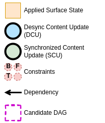
Simple Desynchronized Case
-
SS2 is effectively desynchronized and commits. This results in the desynchronized content update (DCU) 1.
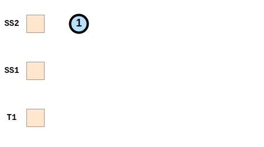
-
DCU 1 is a candidate, and the candidate DAG reachable from DCU 1 is only DCU 1 itself. DCU 1 and thus the candidate DAG does not have any constraints and can be applied.
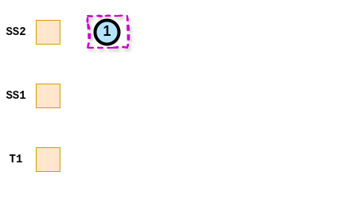
-
The content updates of the candidate DAG get applied to the surface atomically.
-
T1 commits a DCU with a buffer-sync constraint. It is a candidate but its DAG can’t be applied because it contains a constraint.
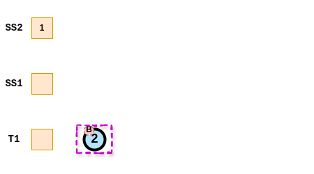
-
T1 commits another CU (DCU 3) which is added at the end of the queue, with a dependency to the previous CU (DCU 2). Both DCU 2 and DCU 3 are candidates, but both DAGs contain DCU 2 with a constraint, and can’t be applied.
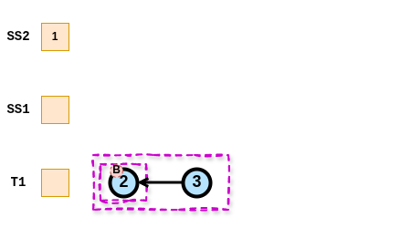
-
When the constraint gets cleared, both DAGs can be applied to the surface atomitcally (either only 2, or 2 and 3).
Simple Synchronized Case
-
SS1 and SS2 are effectively synchronized. SS2 commits SCU 1.
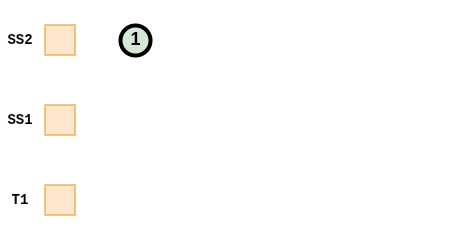
-
SS1 commits SCU 2. The direct child surfaces SS2 has the last SCU 1 in its queue, which is not reachable. This creates a dependency from SCU 2 to SCU 1.
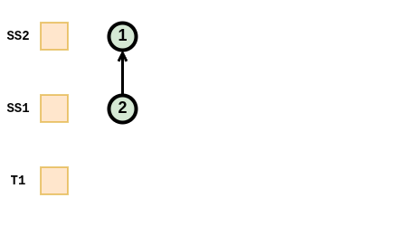
-
SS1 commits SCU 3. The direct child surfaces SS2 has the last SCU 1 in its queue, which is already reachable by SCU 2. No dependency to SCU 1 is created. A dependency to the previous CU of the same queue (SCU 2) is created.
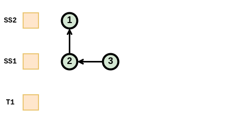
-
T1 commit DCU 4. It is a candidate, its DAG does not contain any constraint and it can be applied.
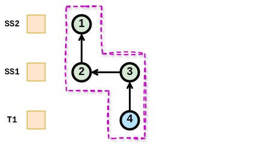
-
The DAG gets applied to the surfaces atomically.
Complex Synchronized Subsurface Case 1
-
Every DCU (1 and 6) contain CUs with constraints in their candidate DAG
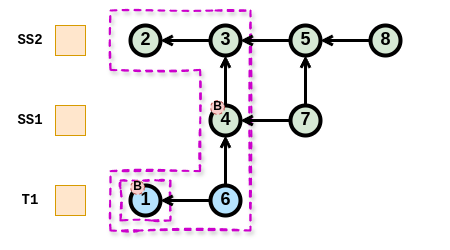
-
Waiting until the buffer-sync constrain on CU 1 is cleared, the candidate DAG of CU 1 does not contain constraints and can be applied
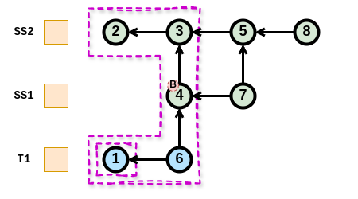
-
That leaves the candidate DAG of CU 6 which still contains another CU with a buffer-sync constrain
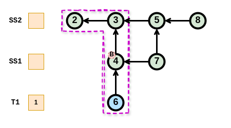
-
Waiting until the buffer-sync constrain on CU 6 is cleared, the candidate DAG of 6 does not contain CUs with constraints and can be applied.
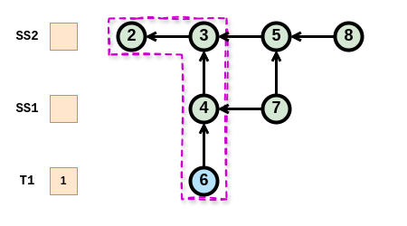
-
There is no DCU left and no constraint remaining. Nothing more can be applied without a new CU.
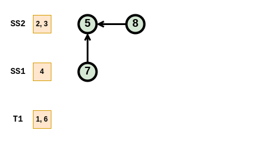
Complex Synchronized Subsurface Case 2
-
Both DCUs (1 and 6) have a reachable DAG containing CU 1 with a constraint
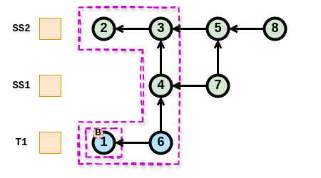
-
Waiting until the buffer-sync constrain on 1 is cleared, both DAGs contain no CU with constraints and can be applied in any order
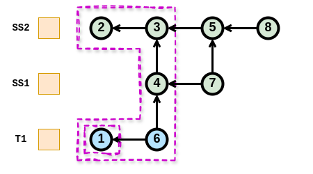
-
That leaves the same state as in the previous case

Synchronized to Desynchronized Subsurface
-
There is one DCU (4) with its reachable DAG that cannot be applied because CU 4 contains a constraint
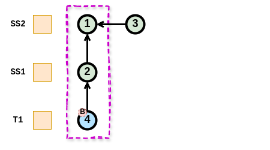
-
Surface SS1 transitions from effectively synchronized to effectively desynchronized. SCU 2 is reachable by DCU 4 so nothing changes.
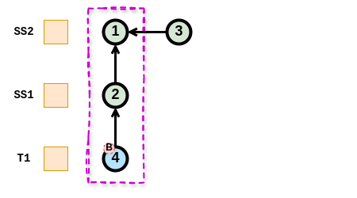
-
Surface SS1 provides a new DCU (5) but because the CU before (2) is a Synchronized CU, it is not a candidate
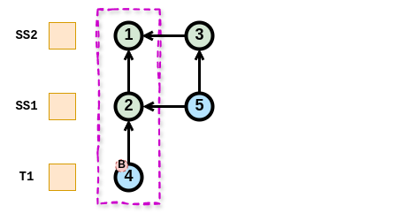
Synchronized to Desynchronized Transition
-
There are four SCUs and all surfaces are effectively synchronized.
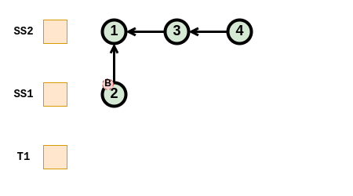
-
Surface SS1 transitions to effectively desynchronized and SCU 2 becomes a DCU because it is not reachable from a DCU
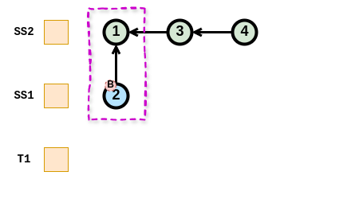
-
Surface SS2 transitions to effectively desynchronized. SCUs 3 and 4 become DCUs because they are not reachable from a DCU. SCU 1 does not change because it is reachable by DCU 2.
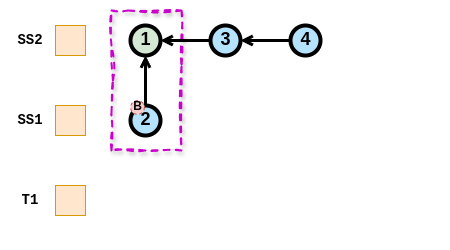
Color management
Overview
Color management in Wayland considers only displays. All pictures in Wayland are always display-referred, meaning that the pixel values are intended as-is for some specific display where they would produce the light emissions (stimuli) the picture’s author desired. Wayland does not support displaying “raw” camera or scanner images as they are not display-referred, nor are they even pictures without complex and subjective processing.
Stimuli — the picture itself — are only half of the picture reproduction. The other half is the environment where a display is viewed. A striking example is comparing a brightly lit office to a dark movie theater, the stimuli required to produce a good reading of the picture is greatly different. Therefore display-referred does not include only the display but the viewing environment as well.
Window systems have been very well capable of operating without any explicit consideration to color management. This is because there used to be the implicit assumption of the standard display, the sRGB display, which all computer monitors implemented, more or less. The viewing environment was and still is accounted by adjusting the display and/or the room to produce a workable experience. Pictures are authored on a computer system by drawing, painting and adjusting the picture until it looks right on the author’s monitor. This implicitly builds the standard display and environment assumption into the picture data. Deviations from the sRGB specification were minor enough that they often did not matter if not in a professional context like the printing industry. Displaying video material required some more attention to the details, because video and television standards differ enough from the sRGB display. What really made explicit color management a hard requirement for entertainment is the coming of wide color gamut (WCG) and high dynamic range (HDR) materials and displays.
The color management design in Wayland follows the general Wayland design principles: compositors tell clients what would be the optimal thing to do, clients tell the compositors what kind of pictures they are actually producing, and then compositors display those pictures the best they can.
Protocol Interfaces
Color management interfaces in Wayland and divided into two protocols: color-management and color-representation. They are designed to work together, but they can also be used independently when the other one is not needed.
Color-management
Color management protocol has two main purposes. First, it puts the responsibility of color management on the compositor. This means that clients do not necessarily need to care about color management at all, and can display just fine by using the traditional standard display assumption even when the actual display is wildly different. Clients can also choose to target some other assumed display and let the compositor handle it, or they can explicitly render for the actual display at hand. Second, when the window system has multiple different monitors, and a wl_surface happens to span more than one monitor, the compositor can display the surface content correctly on all spanned monitors simultaneously, as much as physically possible.
Color-management protocol concentrates on colorimetry: when you have a pixel
with RGB values, what stimulus do those values represent. The stimulus
definition follows the CIE 1931 two-degree observer model. Some core concepts
here are color primaries, white point, transfer function, and dynamic range. The
viewing environment is represented in an extremely simplified way as the
reference white luminance. The connection between pixel RGB values and stimulus
plus viewing environment is recorded in an image description object. Clients
can create image description objects and tag wl_surfaces with them, to
indicate what kind of surface content there will be. Clients can also ask what
image description the compositor would prefer to have on the wl_surface, and
that preference can change over time, e.g. when the wl_surface is moved from
one wl_output to another. Following the compositor’s preference may provide
advantages in image quality and power consumption.
Image description objects can come in two flavors: parametric and ICC-based. The above was written with parametric image descriptions in mind, and they have first-class support for HDR. ICC-based image descriptions are wrapping an ICC profile and have no other data. ICC profiles are the standard tool for standard dynamic range (SDR) display color management. This means the capabilities between the two flavors differ, and one cannot always be replaced by the other. Compositor support for each flavor is optional.
Color-representation
Color-representation protocol deals with (potentially sub-sampled) YCbCr-RGB
conversion, quantization range, and the inclusion of alpha in the RGB color
channels, a.k.a. pre-multiplication. There are several different specifications
on how an YCbCr-like (including ICtCp) signal, with chroma sub-sampling or not,
is created from a full-resolution RGB image. Again, a client can tag a
wl_surface with color-representation metadata to tell the compositor what kind
of pixel data will be displayed through the wl_surface.
The main purpose of color-representation is to correctly off-load the YCbCr-RGB conversion to the compositor, which can then opportunistically off-load it further to very power-efficient fixed-function circuitry in a display controller. This can significantly reduce power consumption when watching videos compared to using a GPU for the same, and on some embedded hardware platforms it is a hard requirement for processing high resolution video.